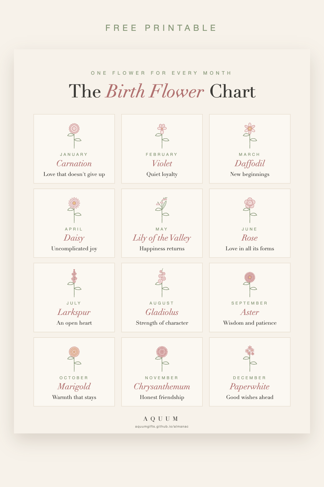

Free Printable Birth Flower Chart: All 12 Months and Their Meanings
2026-09-30
This article may contain affiliate links. How that works.

Every month has its own flower, and every flower has a meaning. This one-page chart puts all twelve together, so you can find anyone's flower at a glance.
Download the free birth flower chart (PDF)
It's letter size (8.5 × 11 in), one page, and prints well on regular paper or cardstock. Use it however you like at home, in a classroom or for a party.

The twelve birth flowers at a glance
- January · Carnation: love that doesn't give up
- February · Violet: quiet loyalty
- March · Daffodil: new beginnings
- April · Daisy: uncomplicated joy
- May · Lily of the Valley: happiness returns
- June · Rose: love in all its forms
- July · Larkspur: an open heart
- August · Gladiolus: strength of character
- September · Aster: wisdom and patience
- October · Marigold: warmth that stays
- November · Chrysanthemum: honest friendship
- December · Paperwhite: good wishes ahead
Each month has a full guide with the flower's history, its second flower and gift ideas. Start with the month-by-month guide.
Ways to use the chart
- Frame it for a nursery, a kitchen or a craft room.
- Bring it to a baby shower and let guests find the baby's flower.
- Use it in class for a spring or birthday lesson.
- Keep it handy for gifts: find the flower before a birthday, then pick something with it. Our Christmas gift guide has ideas for everyone on your list.